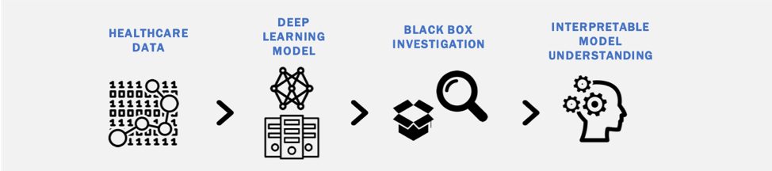
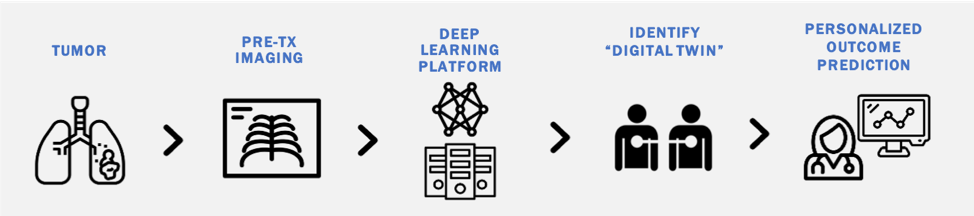
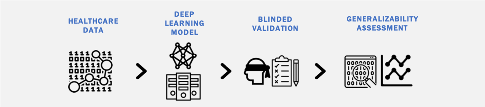

Risk stratification in oncology is clinically challenging and there exists a heterogeneity of outcomes among similarly staged patients. There is an increasing need for cost-effective biomarkers which accurately estimate cancer outcomes. Although molecular biomarkers have promise, they often require additional testing, specialized equipment, and fail to capture intra-tumoral heterogeneity. We are interested in studying the utility of deep learning methods to derive quantitative ‘imaging-based biomarkers’ from pretreatment diagnostic images that provide accurate personalized outcome estimates. Our interest spans multiple diagnostic imaging modalities (CT, MRI, Ultrasound) and numerous diseases including:
Although there is significant promise in the accuracy of deep learning models to classify diagnostic images, a potential road-block in their clinical implementation is the lack of interpretable parameters which reveal the decision process underlying the deep learning model (the ‘black box problem’). We are interested in identifying methods to unpack the black box surrounding deep learning models and the impact such methods have on physician use of deep learning tools in clinical practice.
Machine learning models transform data from an uninterpretable vector space to a more interpretable vector space that can be leveraged for classification/regression tasks. We are interested in further exploring the mapping of data to the interpretable vector space. We hope to identify similar data points within the interpretable vector space created from deep learning modeling of diagnostic images. Our goal is to identify similarity metrics which best match patients with similar outcomes. We call patients who are matched using our developed similarity metrics “digital twins”.
Deep learning has shown the ability to model particularly complex distributions of data in healthcare. One concern remains the relative ease with which deep learning models over-fit to training data and fail to generalize on blinded external validation datasets. We are investigating 1) the generalizability of deep learning models when analyzing different types of healthcare data (imaging, clinical text, claims data); 2) methods to a priori identify models that do generalize well; and 3) ways to improve the generalizability of deep learning models across heterogenous healthcare data streams.
There is increasing interest in the potential utility of AI within healthcare. Clinical implementation of recently developed AI tools requires a better understanding of involved stakeholders (patients, physicians, etc.) and their perception of these emerging technologies. Through a collaboration with the Department of Health Policy at Weil Cornell Medical College, we are using mixed-method approaches to better understand patient and physician perceptions of AI including regulation, liability, and implementation.

Patient-reported outcome collection is associated with improved survival in cancer patients. PRO capture is often costly and lacking objectivity when scaled to larger patient populations. Our lab has developed a deep learning method to analyze audio data to generate semantic representation of patients' daily activities. We are investigating the correlation between these semantic representations and PROs as well as the ability to capture needed audio data using virtual assistant technology.
A barrier to clinical trial enrollment within oncology is lack of awareness of available/applicable randomized clinical trials by clinicians. With support from the National Science Foundation and in partnership with a physician-only question/answer website (The MedNet), we are investigating whether machine learning methods applied to clinician questions can effectively match them to available clinical trials.